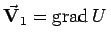
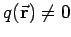
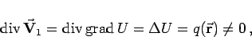
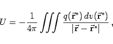
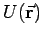

Inhalt Index DeskTop Bronstein

 Vektoranalysis und Feldtheorie Differentialgleichungen der Feldtheorie
Vektoranalysis und Feldtheorie Differentialgleichungen der Feldtheorie


Die Aufgabe der Bestimmung des Potentials U eines Vektorfeldes  in dem Quellen enthalten sind, führt gemäß (13.127a) mit  auf
|  | (13.131a) |
d.h. auf die POISSONsche Differentialgleichung. In kartesischen Koordinaten gilt:
Die LAPLACEsche Differentiagleichung (13.130b) ist somit ein Spezialfall der POISSONschen Differentialgleichung (13.131b).
Lösungen sind das NEWTON-Potential (für Punktmassen) oder das COULOMB-Potential (für Punktladungen)
|  | (13.131c) |
deren Potential  für betragsmäßig größer werdende  -Werte hinreichend stark gegen Null strebt. Die Integration erfolgt über den gesamten Raum.
-Werte hinreichend stark gegen Null strebt. Die Integration erfolgt über den gesamten Raum.
Zur POISSONschen Differentialgleichung können die gleichen drei Randwertbedingungen wie für die Lösung der LAPLACEschen Differentialgleichung formuliert werden. Die erste und dritte Randwertaufgabe sind eindeutig lösbar, an die zweite müssen noch spezielle Bedingungen gestellt werden (s. Lit. 9.5).